신입부원 OT 자료
설다연은 어떤 동아리인가요?
설다연은 서울대학교 유일의 중앙 차동아리입니다!
고정된 동아리방이 없는 대신, 서울 곳곳에 숨겨진 예쁜 찻집들을 직접 찾아다니며 차를 즐기는 매력적인 동아리예요.
설다연에는 부원들이 함께 차를 즐길 수 있도록 다양한 활동들이 준비되어 있습니다!
동아리방이 없는 설다연. 대신 서울 곳곳의 찻집을 함께 다니며 활동합니다. 서울에 이렇게 많은 찻집이 있다니 — 부원들과 함께 다양한 찻집을 방문해보세요.
편한 시간에 모여 친목 나누기. 가능한 시간(11시·14시·19시)에 투표한 뒤 조 배정을 거쳐 모임을 정합니다.
모임 여덟 번이면 본전을 찾는 동아리? 찻집 방문 후 사진과 함께 시음기를 작성해 보내주시면 인원수당 2,500원~의 지원금을 드립니다.
인스타그램 @snu_dado에서 최근 활동과 시음기, 각종 행사와 이벤트를 확인하실 수 있습니다.
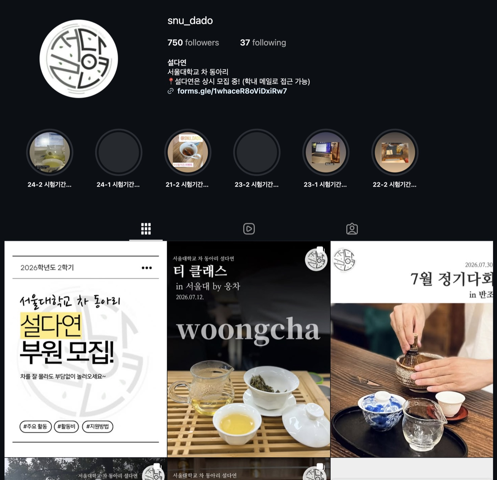
@snu_dado · 최근 활동과 시음기를 만나보세요정기다회
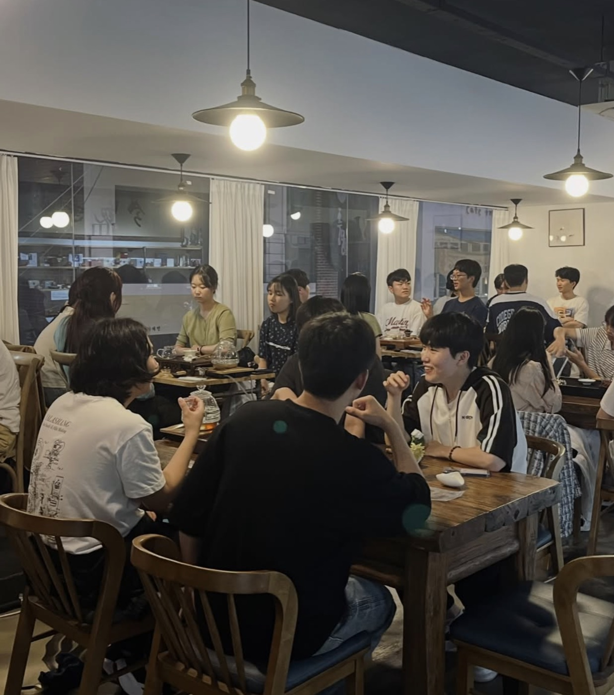
임원진이 주관하는 다회입니다. 소모임보다 많은 인원이 함께 모여 차를 마시며 친목을 나눕니다.
임원진이 다회 일정과 장소, 주제(차 종류 등)를 사전에 공지하고 참가 신청을 받아 인원을 확정합니다. 다회 당일에는 임원진이 준비한 다구와 차로 함께 차를 마시며 이야기를 나눕니다.
소모임 · 3~5명
일주일 단위로 운영되는 가장 기본적인 활동입니다. 화요일에 열리는 투표에서 시작해서 다음 주 모임까지 이어집니다.
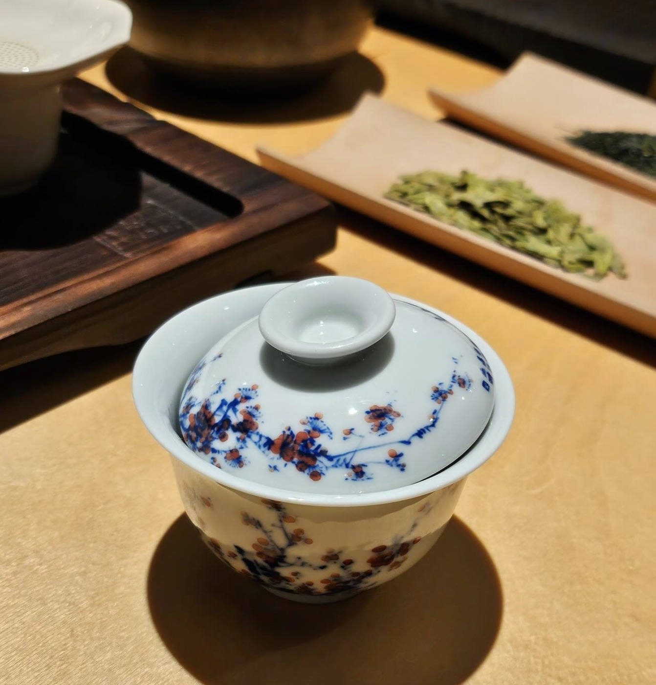
화요일부터 토요일 11시까지 다음 주 가능한 시간대에 투표하면, 토요일에 조 배정 결과가 공지되고 조장이 단톡방을 개설합니다. 공지 이후부터 모임 전까지 조원들이 함께 찻집을 정하고 예약을 잡아둡니다(예약을 권장합니다). 모임 당일에는 실제로 만나 차를 마시고, 사진으로 기록을 남깁니다.
모임 이후에는 시음기를 조 단톡방에 공유하고 조장이 취합해 시음기방에 올립니다. 이때 해시태그로 #시음기, 날짜, 시간, 찻집 이름, 인원수를 함께 남겨주세요. 시음기가 게시되면 회계부장이 인원수당 2,500원의 지원금을 조장에게 카카오페이로 송금합니다.
티 클래스
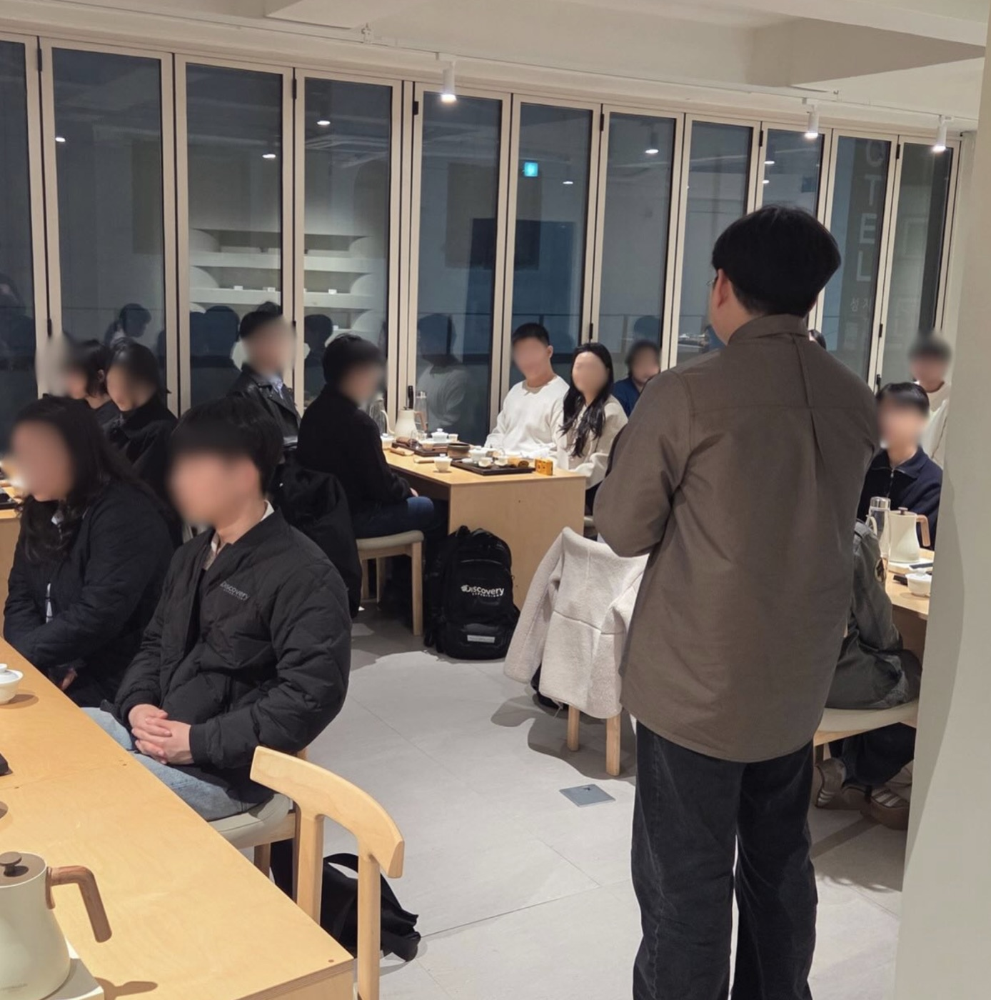
6대 다류와 다구를 소개하고 직접 시음하는 자리입니다. 차 문화와 종류에 대해 깊이 알아볼 수 있습니다.
임원진이 클래스 일정과 주제를 사전에 공지하고 참가 신청을 받아 인원을 확정합니다. 당일에는 6대 다류(백차·녹차·황차·홍차·청차·흑차)와 다구를 함께 살펴보며 직접 시음하는 시간을 가집니다.
제다여행
1학기 활동의 하이라이트. 1박 2일 일정으로 경상남도 하동의 차 산지를 방문해 차 생산 과정을 직접 체험합니다. 연 1회 진행됩니다.
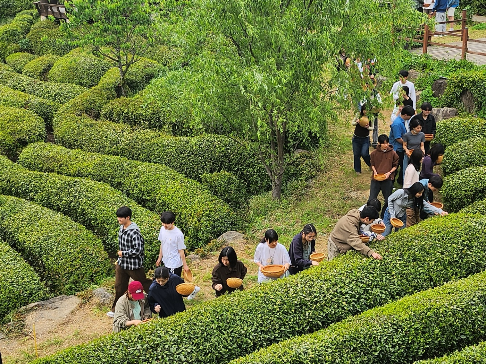
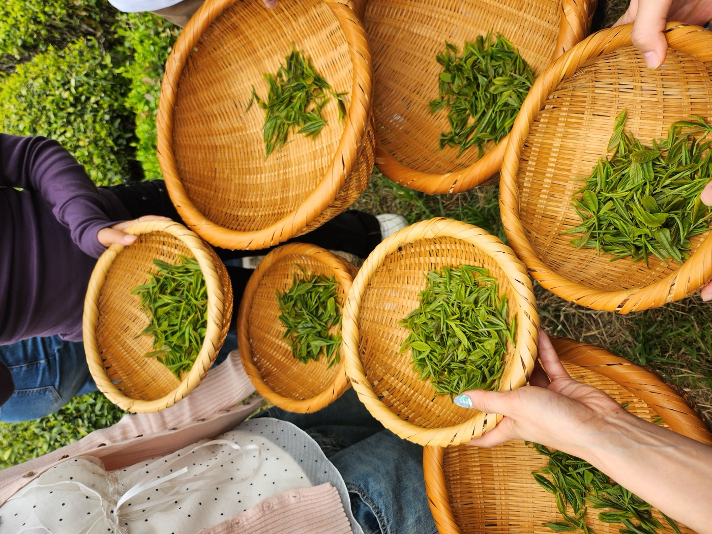
학기 초에 참가 신청을 받아 인원을 확정한 뒤, 5월 중 1박 2일 일정으로 하동군을 방문합니다. 차 밭과 제다 공장을 견학하고 차 만드는 과정을 직접 체험하며, 여행 후에는 사진과 후기를 함께 나눕니다.
연합활동
연세대 관설차회, 이화여대 홍작 등 타 학교 차 동아리와 교류하는 활동입니다. 교류다회, 부스 방문 등 다양한 형식으로 진행됩니다.
양 동아리 임원진이 교류 일정과 형식을 조율한 뒤, 교류다회나 부스 방문 등 함께할 프로그램을 진행합니다. 활동 후에는 사진과 소감을 함께 나눕니다.
티 블렌딩
여러 재료를 조합해 나만의 블렌딩 티를 만들어보는 특별 활동입니다. 준비된 꽃잎, 과일, 향신료를 취향대로 담아 우려내며 조합의 재미를 나눕니다.
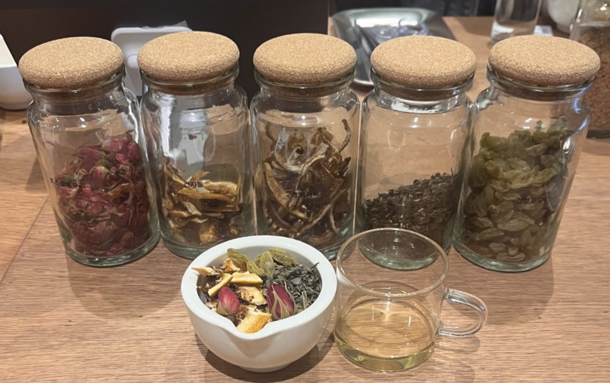
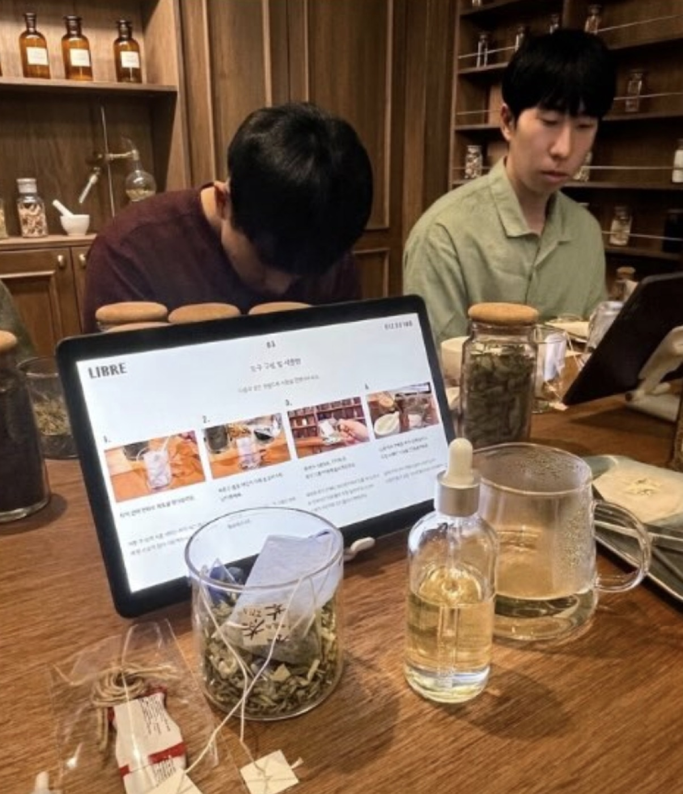
이도옥션
인사동 소재의 도자기 업체 이도옥션이 매달 마지막 주에 학생들을 초대해주십니다. 사장님의 재능기부로 한반도의 옛 차 도구를 소개받고 함께 차를 마시는 시간을 가집니다.
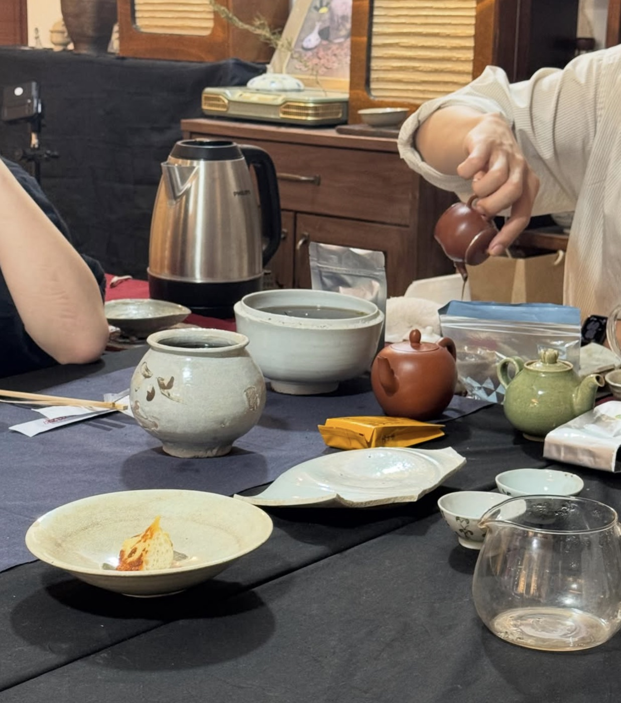
알아두면 좋은 규칙
소모임 불참비 · 2,500원
일요일 투표 결과 고지 이후 파토 시 부과됩니다. 조원들에게 먼저 양해를 구하시고, 회계부장에게 개인톡으로 연락 부탁드립니다.
정기다회 불참비 · 5,000원
당일 파토 시 부과됩니다. 사정이 있으신 경우 사전에 알려주세요.
두 명이 남은 경우
소모임은 3명 이상을 원칙으로 하지만, 조원 불참으로 두 명만 남게 된 경우에는 모임 무산 · 두 분이서 진행 · 다른 조 편입 중 하나를 선택하실 수 있습니다. 두 분이 진행하시는 경우에도 지원금은 동일하게 지급됩니다. 모임이 무산되더라도 불참비는 원인을 제공한 분들만 부담합니다.
뉴비를 위한 튜토리얼
홍차 티백 포장에 적힌 표준 방법(예: 100°C, 200ml, 2~3분)은 한국 사람의 입맛에는 대체로 쓰고 떫습니다. 우유를 타는 습관이 있는 영국에서는 오히려 티백을 두 개 함께 우리기도 하죠. 아래는 참고용 가이드입니다.
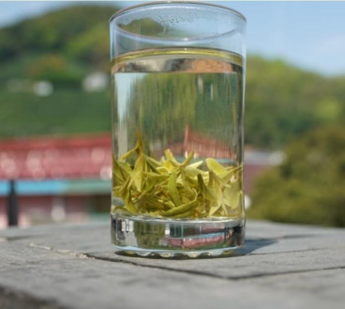
유리잔에서 여러 번 우려 마시는 잎차잎차 · 유리잔
- 끓인 물로 유리잔을 예열하고 찻잎을 넣습니다. 200ml 컵 기준 1~1.5g(두 꼬집 정도).
- 물을 컵의 30% 정도만 부어 향을 먼저 음미합니다.
- 이어서 70% 정도까지 물을 채웁니다.
- 찻잎은 서너 번까지 다시 우릴 수 있습니다 — 뒤로 갈수록 향은 옅어지고 단맛은 강해집니다.
잎차 · 개완
- 끓인 물로 개완을 예열하고 찻잎을 넣습니다 (1~1.5g).
- 뚜껑을 덮고 적당한 시간 동안 우려냅니다.
- 검지로 뚜껑 중앙을 누른 뒤 살짝 기울여 틈을 만들고, 찻잔에 따라냅니다.
티백
- 티백을 찻잔에 넣고 끓인 물을 붓습니다.
- 종이컵은 10~30초, 머그컵은 30초~1분 정도 우린 뒤 꼭 티백을 꺼냅니다. (재사용 가능)
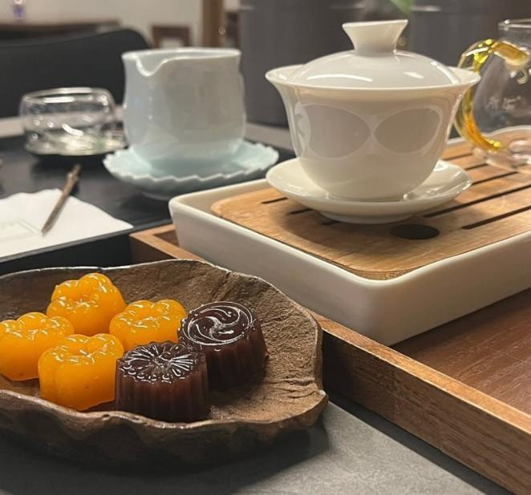
개완 · 숙우 · 다식이 함께 준비된 찻자리환영합니다! 궁금한 점은 언제든 임원진에게 편하게 물어보세요.